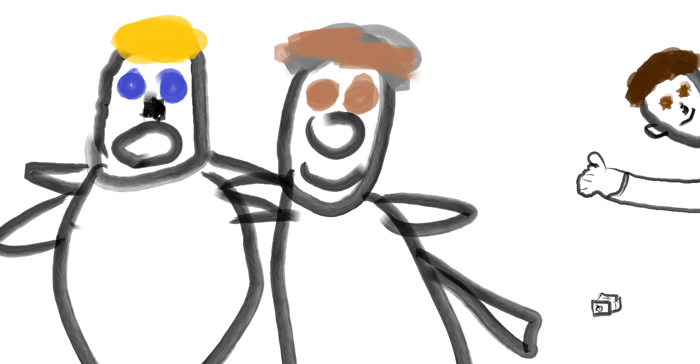

Our Team
TeaBrew Games was founded in in 2016 in Sheffield, United Kingdom by 3 experienced web developers. Our primary focus is on creating high-quality web-based puzzle games for children.
Charles Lee
Director, developer
Charles prefers to be called Charlie and is the director of TeaBrew Games. He has 15 years of experience in full-stack web development and worked for a major social network before founding TeaBrew Games.
Charles enjoys filming worms in his spare time and playing the clarinet.
Mateo Durante
Lead Developer
Programmer by day, dancer by night. In addition to having 10 years of experience in front-end webs development and being our Lead Programmer, Mateo is a keen flamingo dancer and a former sandwich artist at a major sandwich retail chain. He really enjoys working with JavaScript and HTML5.
Matto also enjoys tending to his cabrón (goats) and his two young children.
Andreas Diamondes
Head of Marketing
Andreas is in charge of all things customer service at TeaBrew Games and is the main point of contact for potential clients. Before working at TeaBrew Andreas worked in a similar role at a camel logistics company, fortunately TeaBrew Games' clients are generally far less smelly.
Andreas enjoys spotting electricity pylons and studying the Open Systems Interconnection model. He also plays the sitar and hates children.
Disclaimer
Please note that this website was created as part of a university assignment and as such the company and people dipicted by this website are entirely fictional. No identification with actual persons (living or deceased), places, buildings, and products is intended or should be inferred.